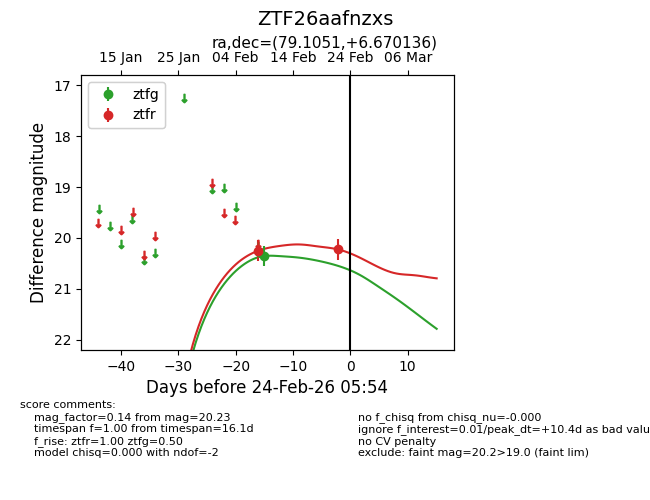
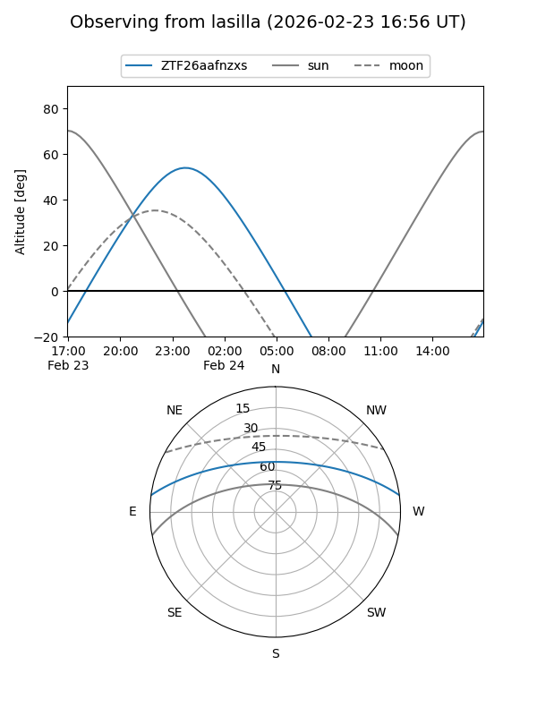
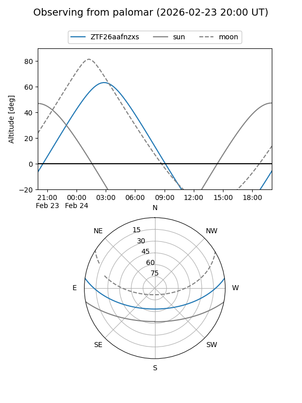

ZTF26aafnzxs
Target ZTF26aafnzxs at 2026-02-24 09:08
Aliases and brokers:
FINK: link
Lasair: link
ALeRCE: link
alt names
ZTF26aafnzxs (ztf,fink_ztf)
Coordinates:
equatorial (ra, dec) = 79.1051,+6.67014
equatorial (HMS+DMS) = 05:16:25.23,+06:40:12.49
galactic (l, b) = (195.4792,-17.64455)
Flags:
Photometry:
last ztfg=20.36, ztfr=20.23
1 ztfg, 2 ztfr detections
Lightcurve

Visibility


Additional plots